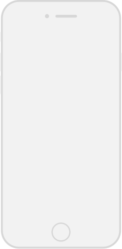
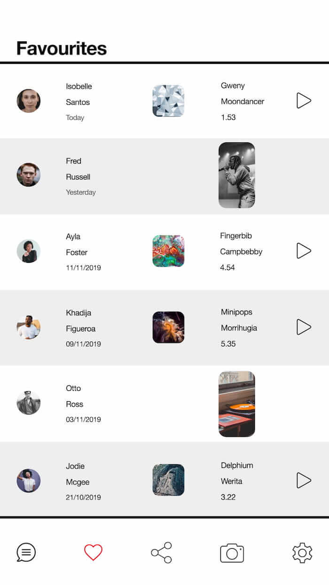
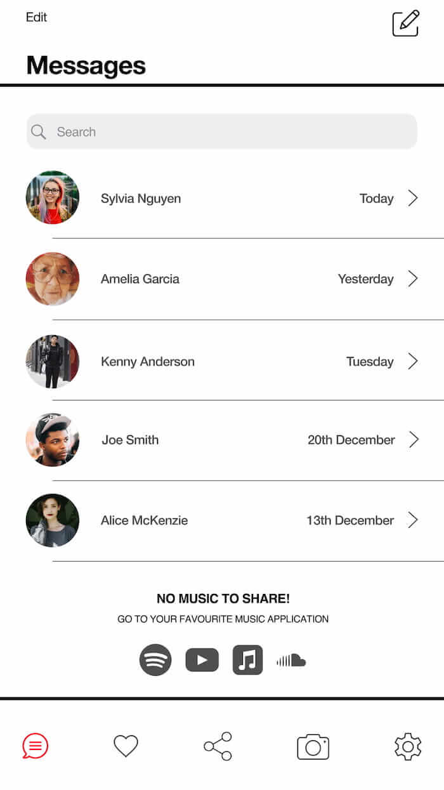
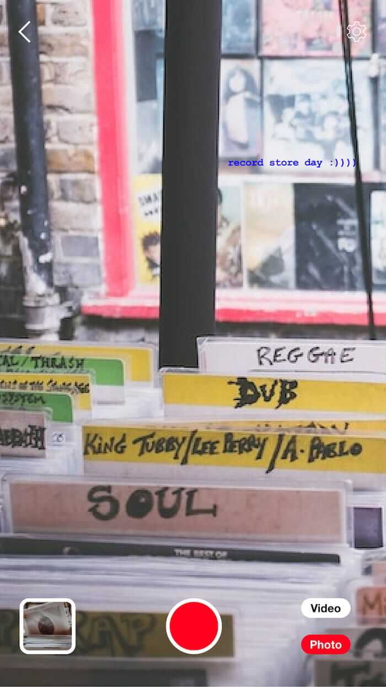
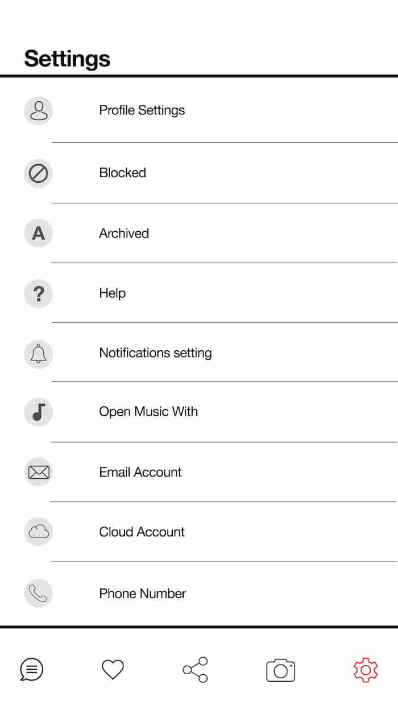

-

- 
- 
- 
- 
MuChat is an iOS and Android messaging app concept for people who are passionate about music and want to share their passion. What if instead of having all your music chat cluttered in different messaging services, you have it all in one place. Here’s where MuChat comes in to solve this problem. MuChat could potentially start a new trend of discussing music between friends, family and professionals. The rest of this site will be explaining the idea, aiming to cover every aspect of the app. I hope you enjoy it.
Scroll horizontality to view triggers and actions.
Sharing music on MuChat is easy as illustrated above.
Select MuChat app on the share options available.
Once directed on to the app the user has many options available to share.
The user can choose from favourite people, messages and favourites. In this example shown the user chooses messages option. The chosen music content can also be saved for later, deleted and played as shown towards the bottom of the home page.
Scroll horizontality to view triggers and actions.
This aspect of the app lets you save your most important music conversations and music content in one place.
Example one demonstrates the user adding to their favourites by double tapping the love heart symbol inside the MuChat app conversation feature.
The second example, a user saves a track from another messaging service. This is handy as it keeps your music messages all in one place.
Scroll horizontality to view triggers and actions.
Step-by-Step Guide
1.At the bottom of the screen of camera mode, you have the option to take a photo or video or even select an image from the phone photo library. The big red button executes the chosen option.
2.When the user is happy with the content, the user can add text or use the draw tool. To choose a contact press the “Share With” button.
3.In this example shown the user selected Joe Smith in the messages section. The content has been sent to Joe Smith, and the music chat begins.
Scroll horizontality to view triggers and actions.
This feature will enable users to collaborate using group chats. In this example shown above, it’s for a set list for a wedding discussed with multiple users.
Scroll horizontality to view triggers and actions.
Playing music content on MuChat is easy, press the play button, and the content will then be played instantly on the user preferred music app.
Scroll horizontality to view triggers and actions.
Setting up MuChat is very easy. You have the option to add Facebook contacts and Instagram contacts to MuChat as part of the contact list. When setting up your account, you can add a profile picture as well and choose which app you prefer to open the music content with. All this can be changed at the setting section later on.
MuChat notifications is similar to any other iOS app notification system. The user details are displayed as well as the track details, as shown above. The play button icon enables the user to play the content instantly after needing to unlock their phone. The number of messages sent is disabled within messages icon as numbers.
My aim for this project was to get a greater understanding of what’s involved in app design and wire-framing. I started by looking at how messaging apps work. I took a lot of inspiration from Facebook messenger, Instagram, iOS messenger and WhatsApp. Then I began to draw layouts and figure out how each interaction would behave. After this stage, I used Figma to design the concept then started wire-framing the interactions to make more sense of how the app works. I found it challenging to portray the workings of the whole app - visuals and interactions. Overall I’m not happy with the entire project. I think the concept is unoriginal, time management was also poor. However, I learnt from my mistakes as you should do.